SLS · DMLS · Hızlı Prototip
3D CAD datalarınızdan, kalıp ve takım yatırımı gerektirmeden, birkaç gün içinde prototip ve ön seri parça.
Teklif İsteyinÜretimlerimiz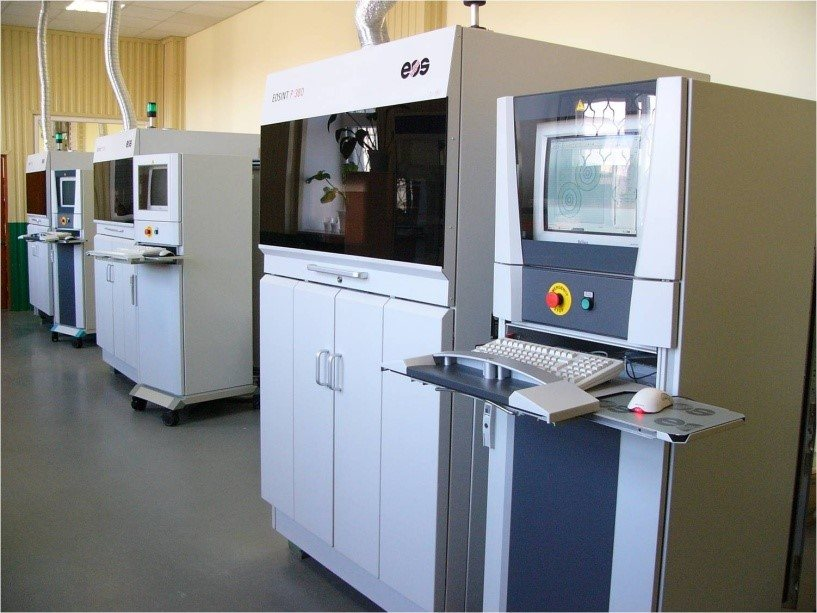
Plastik ve metal hızlı prototip üretmekteyiz. Kuruluş yılımız 2008.
E-Prototip, büyük SLS lazer sinterleme kapasitesi ve tecrübeli kadrosuyla, uygun fiyat ve kısa teslim süresi sunan prototip üretim merkezi. Tasarımdan üretime hızlı geçişte, güçlü ve güvenilir çözüm ortağınız.
3D CAD datalarınız ve lazer sinterleme teknolojilerimizle yapılan ürünleriniz, birkaç gün içinde elinizde. Hem de kalıp ve takım yatırımlarına girmeden. İster ürün geliştirme projelerinizde değerlendirin, isterseniz seri üretimlerinizin parçası olarak kullanın.
Yoğun olarak hizmet verdiğimiz sektörler:
Lazer sinterleme teknolojisiyle kalıp kullanmadan, sadece 3 boyutlu modellerden (3D CAD dataları) üretim.
SLS prototipler, lazer sinterleme teknolojisiyle kalıp kullanılmadan, sadece 3 boyutlu modeller (3D CAD dataları) ile üretilir.
Kısıtlamalar içermeyen tasarımların üretimleri, toz halindeki hammaddelerin düşük katman kalınlıklarında lazer ışını enerjisiyle eritilerek birleştirilmesiyle gerçekleştirilir.
Prototip ya da ön seri parça gereksinimleriniz, katmanlı üretim prosesiyle, talaşlı üretime göre daha kısa sürede ve daha ucuza gerçekleştirilir. Klasik yöntemlerle üretilmesi imkânsız olan ters açılı ve kapalı kesitler, iç boşaltmalar, kısaca aklınıza gelebilecek tüm detaylar yapılır.
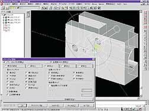
Polyamid (naylon), polistiren ve elastomer bazlı toz malzemeler kullanılır.
Bilgisayar ortamında hazırlanan 3D katı modeller, düşey eksende 0,1 mm kalınlıkta 2 boyutlu katmanlara bölünür. Toz yayma ünitesiyle makine üretim platformuna serilen aynı kalınlıktaki toz malzeme, erime noktasının birkaç derece altına kadar ısıtılır. İlk katmandaki CAD data kesiti lazer ışınıyla taranarak eritilen toz taneciklerinin birleşmesi sağlanır. Platform katman kalınlığına eşit değerde aşağı iner ve üzerine 2. katmanı oluşturacak yeni toz malzeme yayılır. Ortamdaki rezistanslarla ısıtılır ve bu katmandaki yeni kesit lazer ışınıyla taranır. Eriyen tozlar birleşirken, bir önceki katmanda taranmış ve henüz sıvı fazda bulunan malzemeyle bütünleşir. Proses, ardışık işlemlerle, tüm 2D CAD kesitleri taranana kadar sürer. Soğuma periyodu sonrası makineden çıkarılan platformdaki katılaşmış prototipler, çevrelerindeki lazerle taranmamış tozlar temizlenerek alınır.
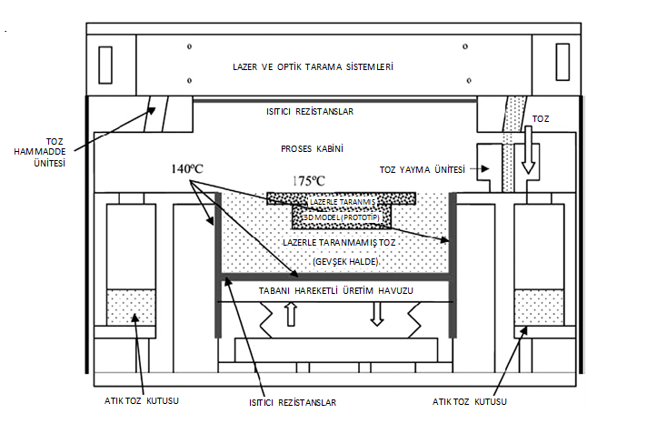
Sağlam, darbeye ve yüksek sıcaklıklara dayanıklı prototiplerle, nihai ürün olarak kullanılacak parçalar elde edilir. Fonksiyonel testler, görsel sunumlar, montajlı setler ve ön seri üretimler için ideal alternatiftir. Çalışan tırnaklı geçme ve hareketli menteşe detayları kolaylıkla üretilir.
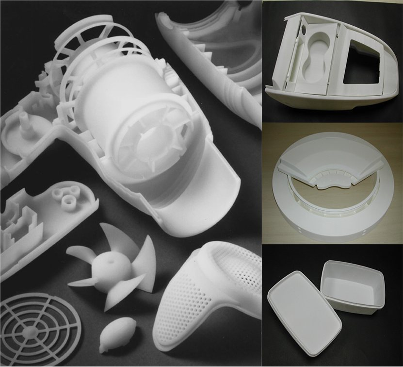
Üretilen en küçük prototipler birkaç mm boyutlarındayken, 2 m ve daha büyük prototipler de üretilmektedir. Makinelerimizin tek parça olarak maksimum üretim kapasitesi 340×340×620 mm'dir. Daha büyük prototiplerin üretimi için 3D model, kırlangıç kuyruğu ya da testere ağzı gibi geçme detaylarıyla bilgisayar ortamında kesilir. Ayrı üretilen parçalar yapıştırılarak birleştirilir ve prototip tek parça halinde teslim edilir.
Minimum et kalınlığı 0,6 mm. Boyut toleransları geometriye bağlı olmakla birlikte ±0,2 mm (100 mm altı), ±%0,2 (100 mm üstü).
| Malzeme | Elastiklik modülü (N/mm²) | Çekme dayanımı (N/mm²) | Kopma uzaması (%) | Sertlik (Shore) | Yoğunluk (g/cm³) | Erime sıcaklığı (°C) |
|---|---|---|---|---|---|---|
| PA2200 | 1700 | 45 | 20 | 75 (D) | 0,9–0,95 | 172–180 |
| PA3200 GF | 3200 | 48 | 6 | 80 (D) | 0,9–0,95 | 172–180 |
| ALUMIDE | 3800 | 46 | 3,5 | 76 (D) | 1,35–1,36 | 172–180 |
| PRIMECAST | 1600 | 1,2–5,5 | 0,4 | – | 0,7–0,85 | – |
| SOMOS | 20 | 3 | 110 | 75 (A) | 0,68 | 156 |
Prototipler her tür boya ile boyanabilir. RAL renk kodlarına göre özel boya hazırlanabilir. Vakum altında krom ve benzeri metal kaplamalar yapılır.
Vidalı bağlantılar içeren modellerde diş detayları SLS üretiminde gerçekleştirilir, sonradan kılavuz çekilmesine gerek kalmaz. Arzu edilmesi durumunda pirinç insert uygulaması yapılır.
Metal lazer sinterleme teknolojisinde, 3D CAD modeli datalarından oluşturulan 0,02–0,06 mm kalınlığındaki metal tozu katmanlarındaki kesitler lazer ışınıyla taranır. Çelik plaka üzerinde, destek (support) yapıları kullanılarak üretim yapılır.
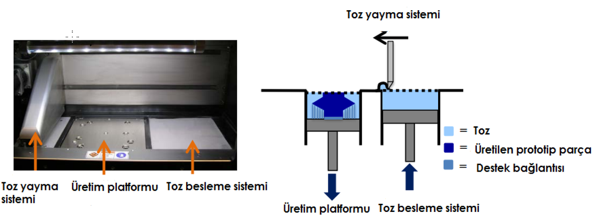
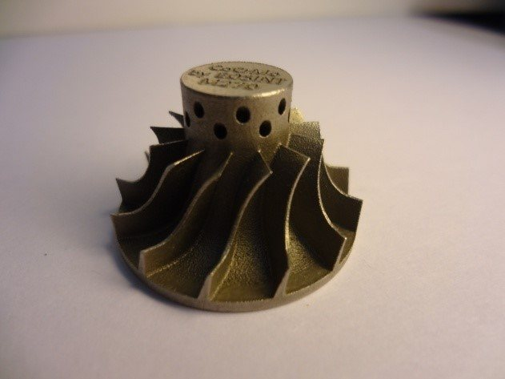
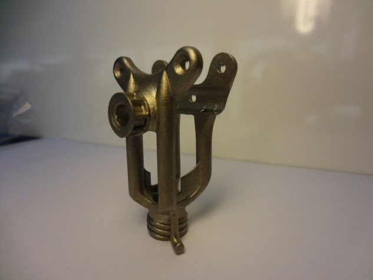
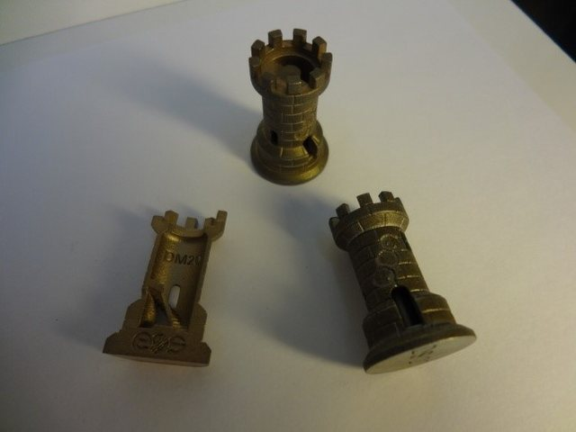
Kalıp sektöründe de metal lazer sinterleme yoğun olarak kullanılmaktadır. Kalıp çekirdekleri, maça ve insertleri, soğutma plaka ve pimlerini örnek uygulamalar olarak sayabiliriz. Keskin iç köşeler ve zor geometrik detaylar kolaylıkla üretilir.
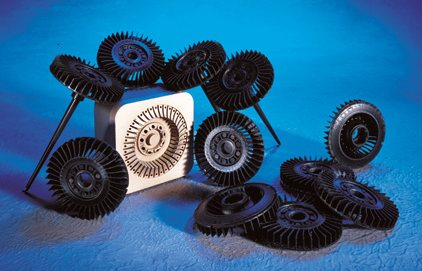
25×25×25 mm boyutlarından daha küçük, birçok frezeleme ve erozyon operasyonu gerektiren kompleks kalıp insertleri için de ideal çözümdür.
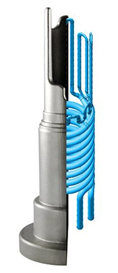
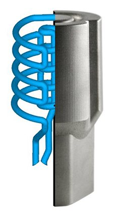
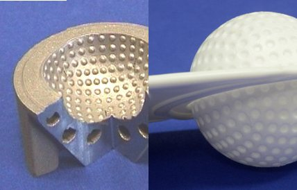
Derin slot delikler, ters açılı kesitler, yüzeye yakın helezonik soğutma kanalları (conformal cooling), spiral kanallı soğutma plaka ve pimleri için tek yöntemdir.
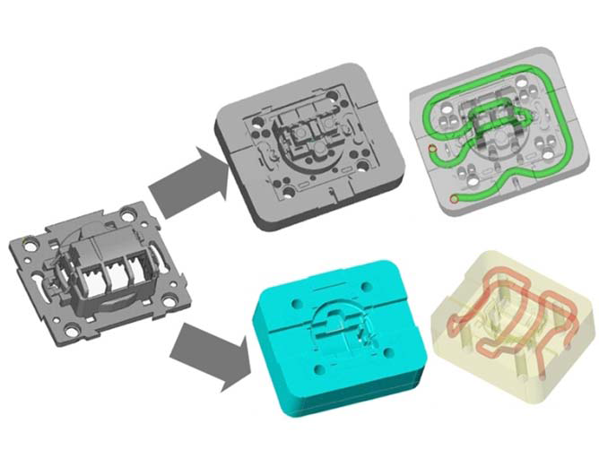
Elde edilen yüzey pürüzlülüğü değerleri 4,5 ile 6,3 Ra arasındadır. Ayna parlaklığı veya kozmetik yüzeyler için ek işlemler uygulanır.
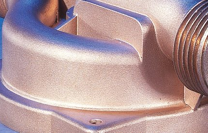
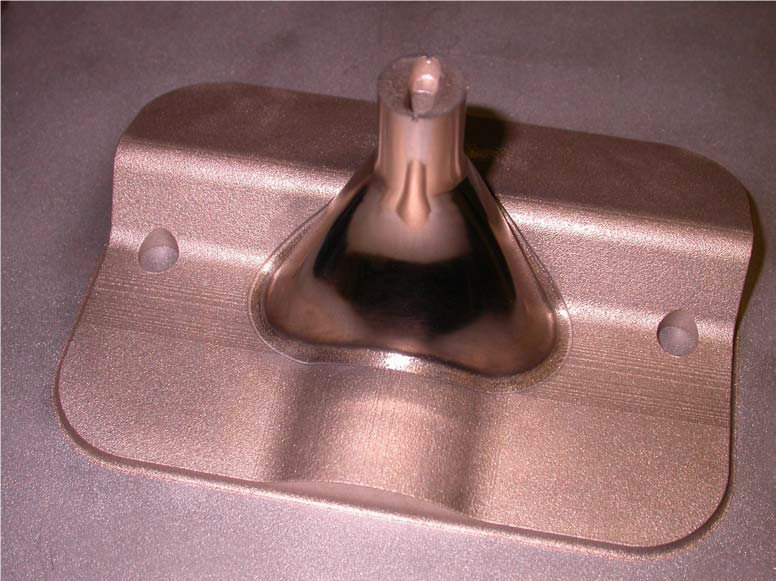
| Malzeme | Tip | Elastiklik modülü (GPa) | Çekme dayanımı (MPa) | Akma dayanımı (MPa) | Sertlik |
|---|---|---|---|---|---|
| DirectMetal 20 | Bronz bazlı toz malzeme | 80 | 400 | 200 | 115 (HV) |
| DirectSteel 20 | Çelik bazlı toz malzeme | 130 | 580 | 400 | 180 (HB) |
| DirectSteel H20 | Çelik bazlı toz malzeme | 180 | 1100 | 800 | 35–42 (HRC) |
| EOS MaragingSteel MS1 | 1.2709 | – | 1900 | 1700 | 36–39 (HRC) |
| EOS CobaltChrome MP1 | CoCrMo alaşımlı | 210 | 1300 | 1000 | 40–45 (HRC) |
Metal lazer sinterleme ile üretilen ham parçanın yüzey pürüzlülüğü Ra 10 (Rz 50) değerlerindedir. Yüzeylerin çelik ve seramik tozlarla kumlanmasıyla pürüzlülük Ra 4 (Rz 15) değerine düşürülür. Yüzey parlatma işlemlerinin uygulanmasıyla ise Rz 1 değerinin de altına inilerek ayna yüzey parlaklığına ulaşılabilir.
Büyük metal prototipler ve kalıp parçalarına, 1–2 saat aralığında 250–500 °C sıcaklıklarda ısıl gerilim giderme uygulaması yapılır.
Metal SLS malzemelerinin karbon içerikleri düşük olduğu için klasik ısıl sertleştirme işlemleri uygulanmaz. Alternatif olarak 200–500 °C sıcaklık aralığında PVD kaplamalar veya 400 °C sıcaklıkların altında nitrürasyon işlemleri uygulanabilir.
3D CAD datanızı gönderin, prototipiniz için teklif hazırlayalım.
Teklif hazırlayabilmemiz için e-postanıza şunları eklemeniz yeterli: